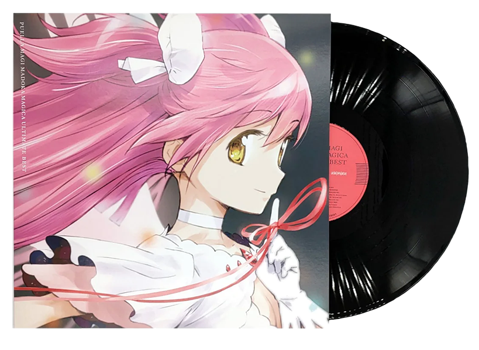

reception
sales
The first Blu-ray volume of the series sold 53,000 copies in its first week, 22,000 of which were sold on its first day, breaking the record held by the sixth BD volume of Bakemonogatari. The second volume sold 54,000 copies, breaking the first volume's record. Each subsequent volume sold over 50,000 copies in their first week. As of October 2012, the total sales of BD and DVDs of the series recorded 600,000 copies, which was unusual for a late-night program at that time. This was despite controversy over the pricing of the volumes, which some considered to be unfairly high. The staff at Japanator stated they could not recommend the volume to their readers due to the prohibitive cost. Bertschy concurred, writing that the "limited episode count and high price of entry make the show inaccessible to an audience unwilling to shell out". The 2017 compilation album Puella Magi Madoka Magica Ultimate Best ranked at No. 4 on Oricon's weekly albums chart, having sold over 13,500 copies. By the end of 2017, Ultimate Best was the 29th best-selling anime CD album of the year.
accolades
legacy
The radio station Tokyo FM reported that Puella Magi Madoka Magica has developed into a social phenomenon in Japan. Toussaint Egan of Paste magazine stated that the series was "widely celebrated by fans and critics alike" upon its release and that the show is "a postmodern reconfiguration of genre tropes rife with plot twists and existential malaise on a cosmic horror level". The Spanish film director Carlos Vermut has cited Madoka Magica as a large influence on his 2014 film Magical Girl. The series was referenced in the HBO series Euphoria. Anime director Hiroyuki Imaishi said that darker-toned series like Madoka Magica are an "industry trend". The series also inspired a Nigerian magical girl franchise, Adorned by Chi.